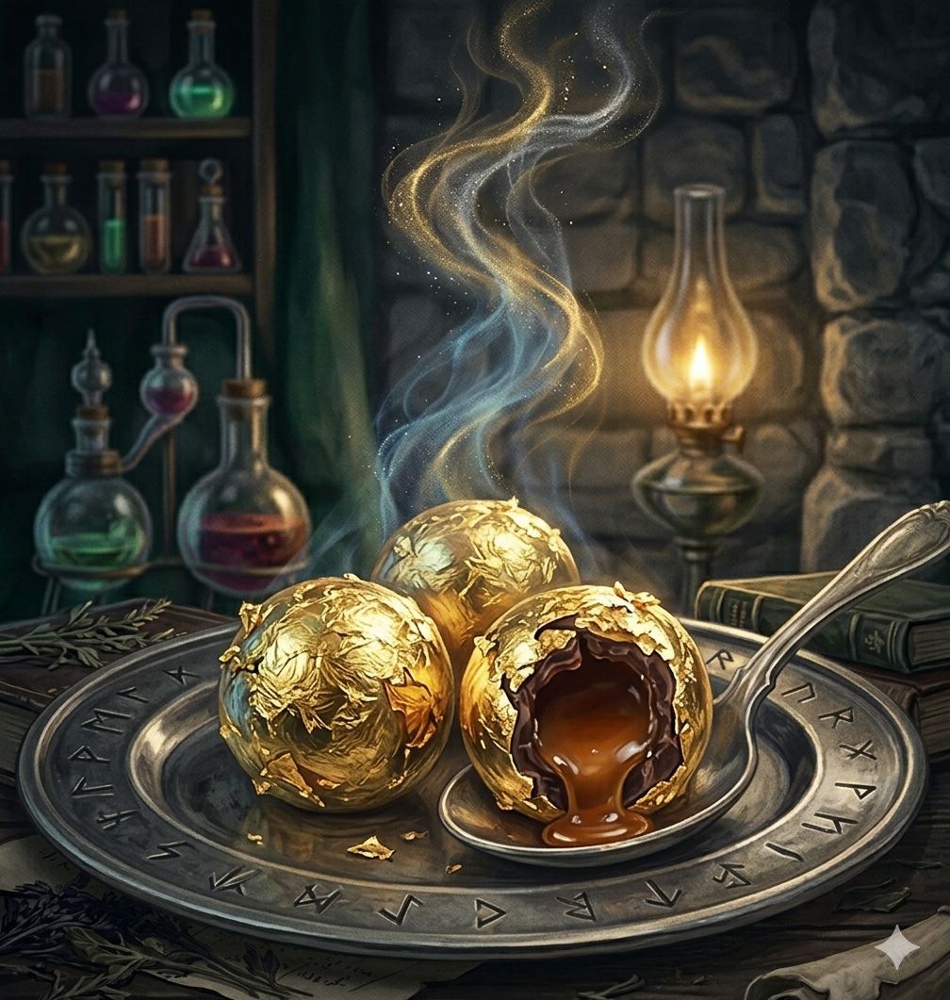

Esferas de Ouro de Gryffindor
A Relíquia Comestível
Inspiradas na bravura e no brilho da casa Grifinória, estas esferas são uma alquimia de texturas e temperaturas. Magnus Riddle dedicou meses para aperfeiçoar a técnica de encapsular fumaça fria de baunilha dentro de uma casca de chocolate belga 70%, garantindo que cada mordida seja uma revelação sensorial.

Ingredientes Preciosos
- • 300g de Chocolate Belga 70% Cacau
- • 150ml de Creme de Leite Fresco
- • Caramelo Salgado Artesanal
- • Folhas de Ouro Comestível 24k
- • Essência de Baunilha de Madagascar (para a fumaça)
O Ritual de Preparo
1. Derreta o chocolate em banho-maria em caldeirão de cobre purificado.
2. Molde as esferas e recheie com o caramelo salgado friamente.
3. Utilize um feitiço de resfriamento instantâneo para aprisionar a fumaça de baunilha no interior.
4. Aplique delicadamente as folhas de ouro com uma pena de fênix."